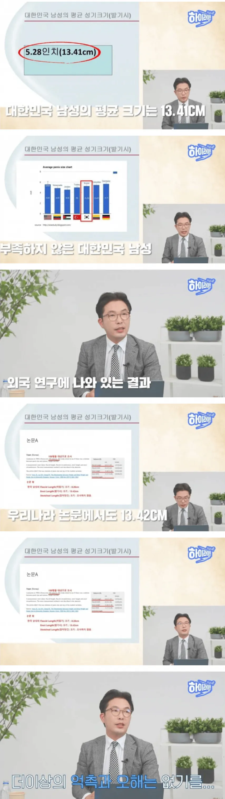

평균은 13.4라고 함 ㅇㅇ
평균 안되는 개붕이 읍제???

평균은 13.4라고 함 ㅇㅇ
평균 안되는 개붕이 읍제???
카더라 출처 ㅂㅇ 한국남자 평균 10임
평균의 뜻을 모르냐? 두명 중 한명은 13.4cm가 안된다 이 말이야. 일단 난 아니니까.. 그럼 이걸 읽고 있는 니가..?
니가는 평균적으로 크지
정확하게 말해서 평균의 뜻을 모르는 건 너임. 넌 중간값 개념을 말하고 있음
자 8명이 9cm고 2명이 14cm면
평균은 몇센티?
두명중한명이 뭐?
천하제일발기대회 잘열리고있나?
저 통계를 어케 쟀냐고 슈발
ㄹㅇ ㅋㅋㅋㅋㅋㅋㅋㅋ
16cm 아래 바나나
그래 평균이 13.5가 맞지
전에 개드립에서10인가 11인가라고 13이면 상위권이라그래서
아니 내주변 다 15이상 나오고 나도 그것보다훨큰데 무슨 10이냐 그랫는데
댓글로 ㅈㄴ까임... 계집처럼 남들 올려치기해서 자랑하냐느니 하남자라느니..
늙어서 시대가 변한거 부정들 하는거임
신검 평균키도 점점 커져서 175 됐는데 아직도 173 시절 들이밀고 있음
평균키가 커지는데 야추는 그대로일리가 ㅋㅋㅋ
평균 깎아먹는 놈들에게 고마울뿐
나의 17은 날아오를것이다 하하
키 163인 내 고추가 14센티미터다. 한국인 평균이 9센티? 말이 안되는 소리지. 결혼한 여자들은 남편 고추 보면 저게 한번 해보지도 못한 숫처녀나 말할만한 개소리라는거 다들 알텐데
영끌해서인가? 꾹 눌러서?
근데 대체 어디서 누가 지원해서 꼬추 발기시켜 측정하는 거냐? 돈이라도 많이 주나?
12.몇 아니였어? 갑자기 평균 이하가 되버리네..
14.5쯤이네 아숩다
이런건 측정을 어디서 하나
비뇨기과가면 기본적으로 체크하는건가?
저런건 또 퍼지지않고 작은것들이 보여주고싶어서 유세라고 또 조롱한다
"갤럭시 S25 Ultra"
발기 시켜서 길이 재기 ㄷㄷ
길이는 평균 상회인데 시발 둘레가 흑흑
뭐 꽈추형 이야기 할때는 이런거 근거 없다고 정신승리하다가 갑자기 안작다고 근거 들이대네….
좀만한 시키들 ㅎㅎㅎ
어케 쟀냐
한국야동이 젤 작던데;;
ㄴㄴ 확실히 다름 일본 여러번 갔는데, 많이다르더라 한국남자들하고
휴지심 너끈히 통과 길이 11 아들딸 두개 만들어서 잘삼